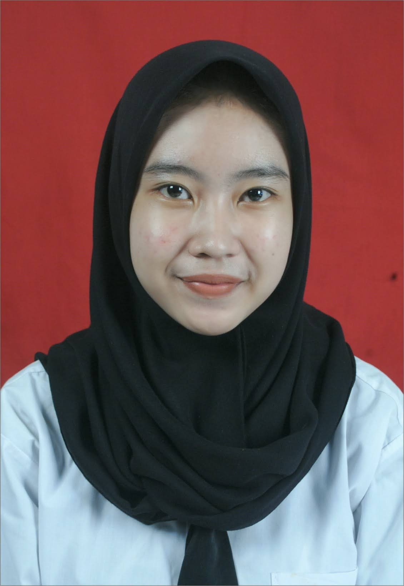

About
Contact
Sosial Media
Luthfia Fauzyah
seorang yang menjadi guru olahraga

Pendidikan
S1 2021-2025
Universitas Pendidikan Indonesia
Pendidikan Olahraga dan Kesehatan
Keahlian
- kemampuan teknik pengajaran
- pengetahuan ilmu cabang olahraga
- kemampuan aneka cabang olahraga
- pengetahuan ilmu kesehatan
- pengetahuan ilmu fisiologi
Portofolio